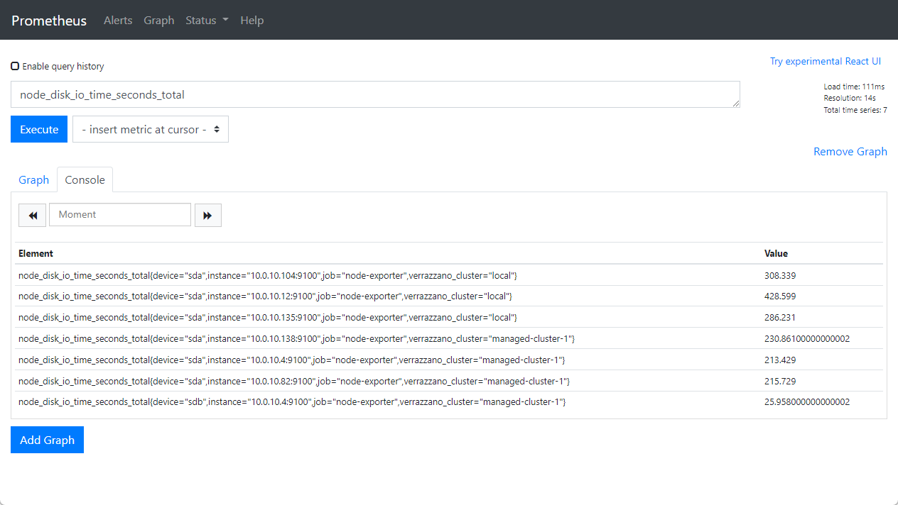
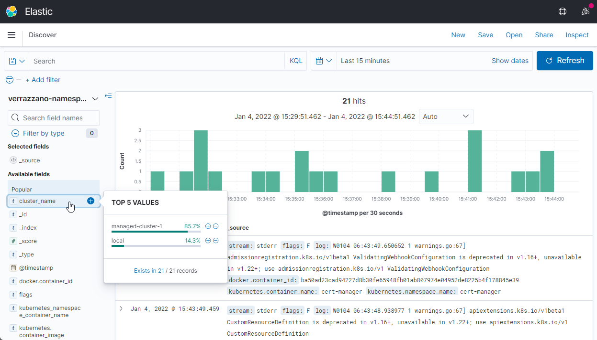
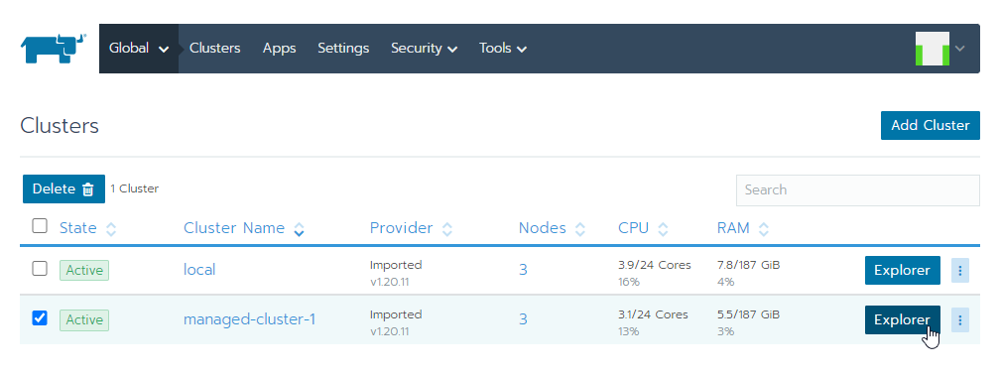
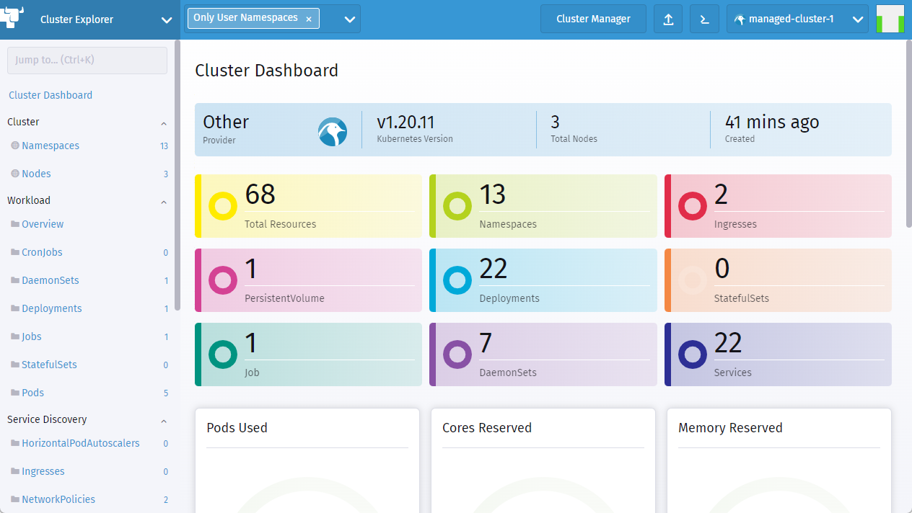

6.3 Multicluster Verrazzano 설치하기
참고문서
Verrazzano 설치
admin-cluster에 Verrazzano 설치
단일 클러스터 환경에 Verrazzano는 설치하는 것과 동일하게 설치합니다. dev 또는 prod 프로파일로 설치합니다. 다만, 설치 yaml 파일(예, install-oci.yaml)에 mananged-cluster와 구분하기 위해 환경 이름을 지정합니다.
-
예시
... spec: environmentName: admin profile: dev ...
managed-cluster에 Verrazzano 설치
단일 클러스터 환경에 Verrazzano는 설치하는 것과 동일하게 설치합니다. managed-cluster 프로파일로 설치합니다. 다만, 설치 yaml 파일(예, install-oci.yaml)에 mananged-cluster와 구분하기 위해 환경 이름을 지정합니다.
-
예시
... spec: environmentName: mc-1 profile: managed-cluster ...
-
설치 결과 확인
kubectl get verrazzano my-verrazzano -o yaml -
결과 예시
- managed-cluster 프로파일로 Managed Cluster를 위한 컴포넌트만 설치됩니다.
status: components: cert-manager: ... instance: consoleUrl: https://verrazzano.mc-1.thekoguryo.ml prometheusUrl: https://prometheus.vmi.system.mc-1.thekoguryo.ml state: Ready version: 1.1.0
Managed Cluster 등록하기
준비 단계
Admin Cluster 설정
-
Context 변경
$ kubectl config use-context admin-cluster Switched to context "admin-cluster". $ kubectl config get-contexts CURRENT NAME CLUSTER AUTHINFO NAMESPACE * admin-cluster cluster-cbrgetu5uwa user-cbrgetu5uwa managed-cluster-1 cluster-cpcnsgcmqsq user-cpcnsgcmqsq managed-cluster-2 cluster-cvoyziqrrzq user-cvoyziqrrzq -
API Server 주소 확인
$ kubectl cluster-info Kubernetes control plane is running at https://129.154.60.75:6443 -
확인한 주소로 ConfigMap 생성
kubectl apply -f <<EOF - apiVersion: v1 kind: ConfigMap metadata: name: verrazzano-admin-cluster namespace: verrazzano-mc data: server: "https://129.154.60.75:6443" EOF
등록 단계 - LetsEncrypt staging 기준
Admin Verrazzano와 Managed Cluster간에 https로 통신을 합니다. 알려진 CA 인증서 외에, Self-Signed 인증서, Let’s Encrypt Staging을 사용하는 경우 Admin Cluster와 Managed Cluster 간의 원활한 통신을 위해 Managed Cluster의 CA 인증서를 Admin Cluster에 등록해 주는 절차가 필요합니다. 관련 절차는 아래 문서를 참조합니다.
※ Let’s Encrypt Staging의 경우 DST Root CA의 만료로 인해 관련 업데이트하지 않는 클라이언트 환경으로 인해 추가적인 작업이 더 필요합니다.
- Let’s Encrypt Staging
Admin Cluster 설정
-
Context 변경
kubectl config use-context admin-cluster -
LetsEncrypt staging CA 등록
# (STAGING) Artificial Apricot R3 curl -O https://letsencrypt.org/certs/staging/letsencrypt-stg-int-r3.pem # (STAGING) Pretend Pear X1 curl -O https://letsencrypt.org/certs/staging/letsencrypt-stg-root-x1.pem MGD_CA_CERT=$(cat *.pem) echo $MGD_CA_CERT kubectl create secret generic "ca-secret-managed-cluster-1" \ -n verrazzano-mc \ --from-literal=cacrt="$MGD_CA_CERT" \ --dry-run=client \ -o yaml > ca-secret-managed-cluster-1.yaml kubectl apply -f ca-secret-managed-cluster-1.yaml -
Managed Cluster로 등록
- 등록 클러스터 이름이 managed-cluster-1 인 경우
kubectl apply -f <<EOF - apiVersion: clusters.verrazzano.io/v1alpha1 kind: VerrazzanoManagedCluster metadata: name: managed-cluster-1 namespace: verrazzano-mc spec: description: "VerrazzanoManagedCluster object" caSecret: ca-secret-managed-cluster-1 EOF -
등록 대기
kubectl wait --for=condition=Ready \ vmc managed-cluster-1 -n verrazzano-mc -
Managed Cluster용 등록 파일 생성
kubectl get secret verrazzano-cluster-managed-cluster-1-manifest \ -n verrazzano-mc \ -o jsonpath={.data.yaml} | base64 --decode > managed-cluster-1-register.yaml
Managed Cluster 설정
-
Context 변경
kubectl config use-context managed-cluster-1 -
등록
kubectl apply -f managed-cluster-1-register.yaml -
등록 결과
Managed Cluster를 Admin Cluster에 등록하게 되면, Managed Cluster에서 주기적으로 Admin Cluster에 앞서 VerrazzanoManagedCluster 유형으로 등록한 자원(managed-cluster-1)의 상태를 주기적으로 업데이트 하게 됩니다.
-
ranch agent 오류 확인
아래와 같이 x509: certificate signed by unknown authority 인증서 오류로 인해 POD가 기동하지 않습니다.
[opc@bastion-host ~ (⎈ |managed-cluster-1:default)]$ kubectl get pod -n cattle-system NAME READY STATUS RESTARTS AGE cattle-cluster-agent-5dd4dd9594-v9tf8 0/1 CrashLoopBackOff 3 2m8s [opc@bastion-host ~ (⎈ |managed-cluster-1:default)]$ kubectl logs -n cattle-system cattle-cluster-agent-5dd4dd9594-v9tf8 ... INFO: https://rancher.admin.thekoguryo.ml/ping is accessible ... time="2022-01-04T06:03:57Z" level=info msg="Certificate details from https://rancher.admin.thekoguryo.ml" time="2022-01-04T06:03:57Z" level=info msg="Certificate #0 (https://rancher.admin.thekoguryo.ml)" time="2022-01-04T06:03:57Z" level=info msg="Subject: CN=*.admin.thekoguryo.ml" time="2022-01-04T06:03:57Z" level=info msg="Issuer: CN=(STAGING) Artificial Apricot R3,O=(STAGING) Let's Encrypt,C=US" time="2022-01-04T06:03:57Z" level=info msg="IsCA: false" time="2022-01-04T06:03:57Z" level=info msg="DNS Names: [*.admin.thekoguryo.ml]" time="2022-01-04T06:03:57Z" level=info msg="IPAddresses: <none>" time="2022-01-04T06:03:57Z" level=info msg="NotBefore: 2022-01-04 04:52:39 +0000 UTC" time="2022-01-04T06:03:57Z" level=info msg="NotAfter: 2022-04-04 04:52:38 +0000 UTC" .. time="2022-01-04T06:03:57Z" level=info msg="Certificate #1 (https://rancher.admin.thekoguryo.ml)" time="2022-01-04T06:03:57Z" level=info msg="Subject: CN=(STAGING) Artificial Apricot R3,O=(STAGING) Let's Encrypt,C=US" time="2022-01-04T06:03:57Z" level=info msg="Issuer: CN=(STAGING) Pretend Pear X1,O=(STAGING) Internet Security Research Group,C=US" ... time="2022-01-04T06:03:57Z" level=info msg="Certificate #2 (https://rancher.admin.thekoguryo.ml)" time="2022-01-04T06:03:57Z" level=info msg="Subject: CN=(STAGING) Pretend Pear X1,O=(STAGING) Internet Security Research Group,C=US" time="2022-01-04T06:03:57Z" level=info msg="Issuer: CN=(STAGING) Doctored Durian Root CA X3,O=(STAGING) Internet Security Research Group,C=US" ... time="2022-01-04T06:03:57Z" level=fatal msg="Certificate chain is not complete, please check if all needed intermediate certificates are included in the server certificate (in the correct order) and if the cacerts setting in Rancher either contains the correct CA certificate (in the case of using self signed certificates) or is empty (in the case of using a certificate signed by a recognized CA). Certificate information is displayed above. error: Get \"https://rancher.admin.thekoguryo.ml\": x509: certificate signed by unknown authority" -
cattle-cluster-agent를 수정하여 반영합니다.
-
수정
kubectl edit deploy cattle-cluster-agent -n cattle-system -
추가 사항
initContainer를 통해 별도로 새 인증서를 다운로드 받아 공유 볼륨을 통해 cluster-register 컨테이너에 전달합니다.
apiVersion: apps/v1 kind: Deployment ... containers: - env: ... name: cluster-register ... volumeMounts: - mountPath: /cattle-credentials name: cattle-credentials readOnly: true - mountPath: /etc/pki/tls/certs/ name: certs initContainers: - name: prepare-to-fix-ca-expire image: ghcr.io/verrazzano/rancher-agent:v2.5.9-20211209021347-2e57ce2a4 command: - /bin/sh - -c - | echo start curl -k https://letsencrypt.org/certs/staging/letsencrypt-stg-root-x1.pem -o /etc/pki/ca-trust/source/anchors/letsencrypt-stg-root-x1.pem update-ca-trust cp /etc/pki/ca-trust/extracted/pem/tls-ca-bundle.pem /certs/ca-bundle.crt cp /etc/pki/ca-trust/extracted/openssl/ca-bundle.trust.crt /certs/ca-bundle.trust.crt echo end volumeMounts: - mountPath: /certs/ name: certs ... volumes: - name: cattle-credentials secret: defaultMode: 320 secretName: cattle-credentials-2b150a3 - name: certs emptyDir: {} status ... -
결과 재 확인
[opc@bastion-host ~ (⎈ |managed-cluster-1:default)]$ kubectl get pod -n cattle-system NAME READY STATUS RESTARTS AGE cattle-cluster-agent-6b785ffd86-vshsw 1/1 Running 0 42s -
위 POD가 정상으로 기동해야 Admin Cluster의 Rancher에서 Managed Cluster가 Active 상태로 등록된 것을 확인할 수 있습니다.
-
등록 결과 확인
-
admin cluster로 context 변경
kubectl config use-context admin-cluster -
앞서 등록한 Managed Cluster 자원의 현재 상태 확인
- status.lastAgentConnectTime 값으로 마지막 연결된 시간을 통해 연결되었음을 확인합니다. managed-cluster-1의 apiUrl과 prometheusHost 주소도 등록된 것을 알 수 있습니다.
$ kubectl get vmc managed-cluster-1 -n verrazzano-mc -o yaml apiVersion: clusters.verrazzano.io/v1alpha1 kind: VerrazzanoManagedCluster metadata: ... spec: ... status: apiUrl: https://verrazzano.mc-1.thekoguryo.ml conditions: - lastTransitionTime: "2021-12-31T06:48:59Z" message: Ready status: "True" type: Ready lastAgentConnectTime: "2021-12-31T06:57:06Z" prometheusHost: prometheus.vmi.system.mc-1.thekoguryo.ml rancherRegistration: message: Registration of managed cluster completed successfully status: Completed state: Active
최종 확인
Promethus
-
Verrazzano Admin Cluster의 Prometheus로 접속합니다.
-
샘플 쿼리 node_disk_io_time_seconds_total 로 하면 그림과 같이 Verrazzano Managed Cluster의 메트릭 정보도 함께 조회됨을 알 수 있습니다.

Kibana
-
Verrazzano Admin Cluster의 Kibana로 접속합니다.
-
아직 배포된 앱이 없다면, 모든 Verrazzano Cluster에 있는 namespace 기준(예, cert-manager)로 인덱스 패턴을 생성합니다.
-
선택 가능한 필드에서 cluster_name을 클릭합니다. 아래와 같이 Admin Cluster(local) 및 등록된 Managed Cluster에서도 로그를 가져오는 것을 알 수 있습니다.

Rancher
-
Verrazzano Admin Cluster의 Prometheus로 접속합니다.
-
아래와 같이 Managed Cluster가 정상적으로 등록된 것을 볼 수 있습니다.

-
Explorer를 클릭하여 클러스터로 화면에서도 잘 보이는 것을 알 수 있습니다.

** 이 글은 개인으로서, 개인의 시간을 할애하여 작성된 글입니다. 글의 내용에 오류가 있을 수 있으며, 글 속의 의견은 개인적인 의견입니다. **